4 Linear Models (LM)
4.1 Simple linear regression
When analysing data, we are often interested in exploring the relationship between a single response variable and one or multiple explanatory variables (predictors). This can be done by fitting a linear model. In fact, we have already come across this in earlier sections of this workshop; here we will provide more information on what is unde the hood and how to do perform linear modelling in R.
The term linear in linear models refers to the fact that there is a linear, or straight line, relationship between a predictor, \(x\), and the response \(y\). In other words, we can write \[ y = \beta_0 + \beta_1 x \] where \(\beta_0\) is the so-called intercept, i.e. the value of \(y\) when \(x=0\), and \(\beta_1\) is the gradient, which describes by how much \(y\) varies with increasing or decreasing values of \(x\).

What can be seen form the above graph is that the data points are not all on top of the regression line but spread above and below it. What this means is that an individual data point, \(y_i\), can be described by the linear relationship \[y_i = \beta_0 + \beta_1 x_i + \epsilon_i\] where \(\epsilon_i\) is the deviation, or (residual) error, between the best line fit and the actually observed value \(y_i\).
One on the key assumptions of a linear model is that all the \(\epsilon_i\)’s are normally distributed with a mean of 0 and some standard deviation \(\sigma\). In mathematical terms, the linear regression model is therefore defined as \[ \begin{align} y_i &= \beta_0 + \beta_1 x_i + \epsilon_i \\ \epsilon_i &\sim \mathcal{N}(0, \sigma^2) \end{align} \]
\(\epsilon\) is also commonly referred as the noise term. This is because the response variable has usually some uncertainty associated with it (e.g quantifying gene expression using microarrays or RNA-seq, etc.).
The general idea behind linear regression is to find the best fit line which minimises, or absorbs, the total (residual) noise. We are not going into the mathematical intricacies but rather show you how this is done in R, together with the general workflow of linear regression
- infer the model parameters \(\beta_0\) and \(\beta_1\)
- check the model fit
- interpret the significance of the estimated parameters
4.2 Linear regression in R
To show you how easy it is to linear regression in R we first create a fake dataset, which contains data of the height and weight of \(N=100\) individuals randomly sampled from a population
N <- 100
height <- runif(N, min = 135, max = 195)
weight <- 0.48 * height + rnorm(N, mean=0, sd=7)
sampleData <- data.frame(height = height,
weight = weight)
ggplot(sampleData, aes(x = height, y = weight)) +
geom_point() +
labs(x = 'height (cm)',
y = 'weight (kg)')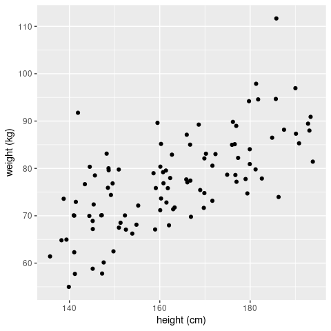
Judging by eye we would be confident to declare that there is a (linear) relationship between the height and weight of an individual. So let’s fit a linear regression model and check whether this is indeed the case (in a statistical sense). To do this in R we will use the lm() function (please read the documentation for full details). This function requires a formular that describes the relationship between the predictor or explanatory variable (here height) and the response variable (here weight), which is given in the form response ~ explanatory, or in our case weight ~ height. With this, R will try to fit the following model
\[ weight_i = \beta_0 + \beta_1 \times height_i + \epsilon_i \]
And here is how this is done
# fit linear model and assign to object 'fit'
fit <- lm(weight ~ height, data = sampleData)
# print output
print(fit)##
## Call:
## lm(formula = weight ~ height, data = sampleData)
##
## Coefficients:
## (Intercept) height
## 8.8537 0.4204The output of interest are the two numbers (Intercept)= 8.8537, which is our \(\beta_0\) term, and weight= 0.4204, which is our \(\beta_1\) term.
So far so good; but how do we get the regression line? There are, in principle, two ways: either we calculate this by hand using the beta-terms we just obtained, or we use the predict() function (please see R documentation for further details).
# define the x-range for our regression line
bestFit <- data.frame(height = c(135, 195))
# Option 1: calculate the y-values by hand
bestFit["weight"] <- 5.0613 + 0.4471 * bestFit$height
# Option 2: use the predict() function
bestFit["weight"] <- predict(fit, newdata = bestFit)
ggplot(sampleData, aes(x=height, y=weight)) +
geom_point() +
geom_line(data=bestFit, aes(x=height, y=weight), col = 'blue', linewidth = 1)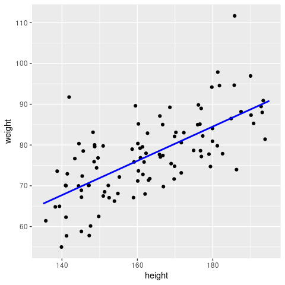
Note: this is essentially what
geom_smooth(method = 'lm')would have done for us!
4.2.1 Using the summary() function
Above the called print(fit) to obtain the fitted parameters of our model. However, if you check carefully in the Environment tab in RStudio, you will see that fit contains a lot more information. And this can be summarised in a much more informative fashion using the summary() function
##
## Call:
## lm(formula = weight ~ height, data = sampleData)
##
## Residuals:
## Min 1Q Median 3Q Max
## -13.2130 -5.0512 -0.6079 4.6114 24.7020
##
## Coefficients:
## Estimate Std. Error t value Pr(>|t|)
## (Intercept) 8.85369 7.45411 1.188 0.238
## height 0.42043 0.04554 9.232 5.63e-15 ***
## ---
## Signif. codes: 0 '***' 0.001 '**' 0.01 '*' 0.05 '.' 0.1 ' ' 1
##
## Residual standard error: 7.234 on 98 degrees of freedom
## Multiple R-squared: 0.4651, Adjusted R-squared: 0.4597
## F-statistic: 85.23 on 1 and 98 DF, p-value: 5.627e-15Let’s go through this line-by-line
Call
This just states the arguments that were passed to thelm()function. Remember it’sresponse ~ explanatory.Residuals
Some basic stats about the residuals (i.e the differences between the model fit and the observed data points). It is easier to plot a histogram of the residuals (shown in the next section), but these basic stats can already give us an indication of whether we have a symmetric distribution with zero mean (i.e we want the median to be close to zero, the third quartile (Q3) to be roughly equal to -Q1 (first quartile) and the max to be approximately -min).Coefficients
Estimate
(Intercept)= 8.8537 andweight= 0.4204 kg/cm are our regression parameters.Std. Error
The standard errors for the two inferred parameters. They tells us how confident we are in our estimates: if the standard error is comparable or greater than the actual parameter estimate itself then that point estimate should not be trusted. We can also show the confidence intervals for the model parameters to highlight their uncertainty using theconfint()function:
## 2.5 % 97.5 % ## (Intercept) -5.938749 23.646134 ## height 0.330056 0.510808t valueandPr(>|t|)
This is the result of a hypothesis testing against the null hypothesis that the coefficient is zero.
Residual standard error
The square root of the residual sum of squares / degrees of freedom (here 98 = 100 (data points) - 2 (parameters needed for the regression line))Multiple R-squared
The \(R^2\) statistic, which is also referred to as as the coefficient of determination is the proportion of the total variation that is explained by the regression, i.e.total variation = regression (explained) variation + residual (unexplained) variation
In regression with a single explanatory variable, this is the same as the Pearson correlation coefficient squared.F-statistic
The F-statistic can be used to assess whether the amount of variation explained by the regression (\(M_1\)) is statistically significantly different compared to the null model (\(M_0\)), which in this case corresponds just taking the mean of the data. Large values of the F-statistic correspond to cases where the model fit is better for the more complex model compared to the null model. This test can be used to generate a P-value to assess whether the model fit is statistically significantly better given a pre-defined level of significance.
4.3 Model checking
The next step in linear (or any statistical) modelling is the concept of model checking. In theory, we could fit any model to our data simply by changing our assumptions about how the response and predictor variables are related. What we would like to do, however, is to make robust inferences, and for this we must check our model, which essentially boils down to checking whether our assumptions are reasonable.
The main assumption in our model was that the residuals (the differences between the data points and the regression line) are normally distributed around 0. We can easily check whether this is the case
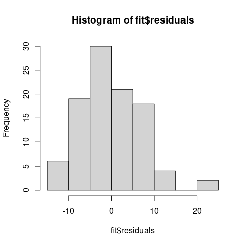
We can see that the residuals are fairly evenly distributed and centered around 0, which is a good sign!
R also provides us with some easy tools for further model diagnostics, which can be called simply through
#setting up a 2x2 plot grid
par(mfrow=c(2,2))
# plot model diagnostics
plot(fit, pch = 20, cex = 0.5)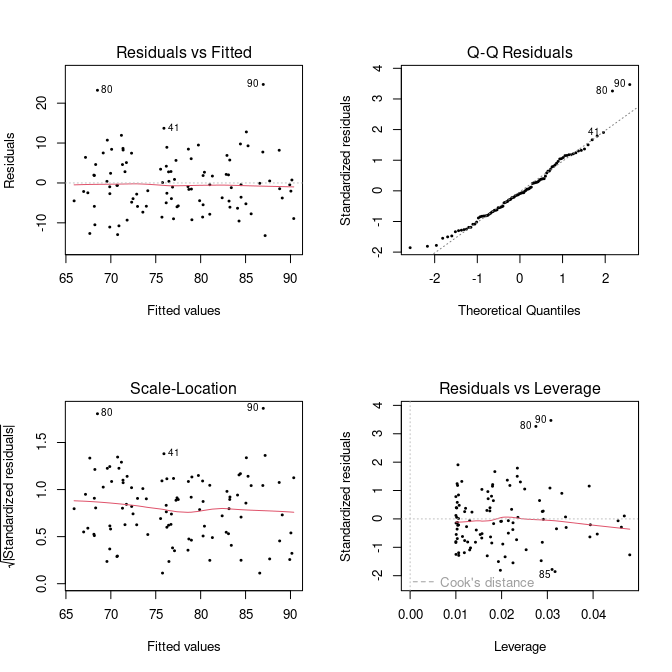 What do these plot tell us about the model fit, though?
Residuals vs Fitted
The first plot, Residuals vs Fitted, checks that the variance is constant along the fitted line and that there is no systematic pattern whereby the errors get bigger or smaller as dependent on the fitted values. In our case, everything seems to be OK, but here are some (extreme) examples where this is not the case:

Normal Q-Q
A Q–Q plot, or quantile-quantile plot, compares two probability distributions by plotting their quantiles against each other. If the two distributions are similar, then the points should fall approximately on the identity line \(y = x\). In our case, we are plotting the quantiles of the residuals against their assumed distribution, which is the Normal distribution, and see that there is nothing to worry about (which we should know already from the histogram above).
Here is an example when things go wrong (i.e. when our linear assumption is violated):
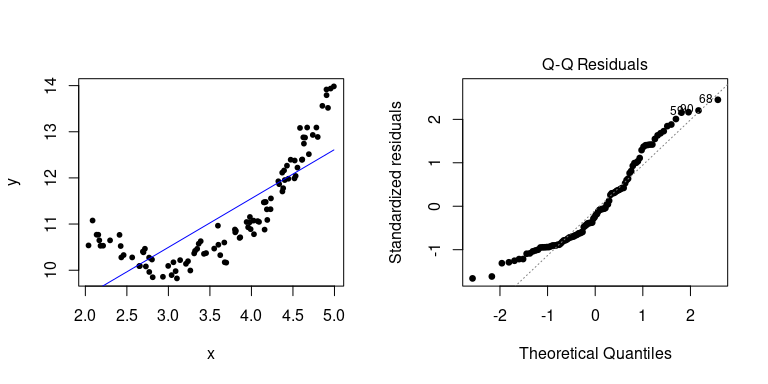
Residuals vs Leverage
The last plot examines the influence of individual data points on our inference. Ideally, all points should equally contribute to the fit. In some cases we might find outliers, which have an above leverage on the fitted line, which can be measured by *Cook’s distance’. An extreme example is shown here
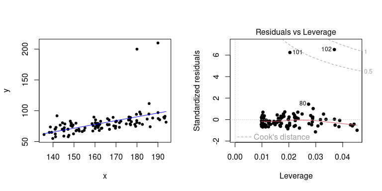
4.4 Prediction
Making predictions about unknown or unobserved data is the key benefit of statistical modelling. In fact, we have already used this to overlay a regression line onto our data by using the predict() function. Going back to our original example, let’s say we want to know the average weight for an individual who is 187cm tall. Note, the predict() function requires the new (to be predicted) data to be provided as a data.frame.
## 1
## 87.47447Remember that our inference comes with a degree of uncertainties (because we can never know the true relationship based on a random sample from a population). A useful feature of the predict() function is that it can not only provide point estimates but also the confidence or prediction interval. Let’ say we are intereted in the 95% confidence interval for our prediction
## fit lwr upr
## 1 87.47447 84.86624 90.08271and to obtain the 96% prediction interval
## fit lwr upr
## 1 87.47447 72.88477 102.0642As you can see, the prediction interval is significantly larger than the confidence interval.
4.4.0.1 Confidence vs prediction interval
The confidence interval corresponds to the uncertainty surrounding our estimate of an average individual; it represents the uncertainty in the mean (i.e. in our case the regression line): \(y = \beta_0 + \beta_1 x\). In contrast, the prediction interval corresponds to the uncertainty surrounding an Individual observation.
Here we show you how both intervals can be computed and added to your (linear) regression line. Although these are often not shown they are important for conveying uncertainties.
newheight <- data.frame(height = seq(min(sampleData$height), max(sampleData$height), length.out=100))
newdata <- cbind(newheight, predict(fit, newdata = newheight, interval = 'confidence', level = 0.95)) %>%
rename(weight = fit)
ggplot(mapping = aes(x = height, y = weight)) +
geom_point(data = sampleData) +
geom_ribbon(data = newdata, aes(ymin=lwr, ymax=upr), fill = 'grey', alpha = 0.7) +
geom_line(data = newdata, col = 'blue', linewidth=1) … and now compare this to what geom_smooth() produces
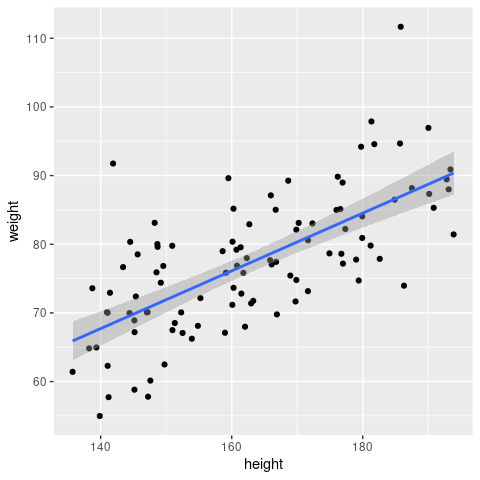
They are the same - so now you know what geom_smooth() actually does!
\(~\)
4.5 Multiple linear regression
So far we have only considered a single explanatory variable, for example height. In most scenarios, however, we will have measured more than variable that could affect the outcome (response). In this case, our linear regression model extends to \[ y_i = \beta_0 + \beta_1 x_{1i} + \beta_2 x_{2i} + ... + \beta_n x_{ni} + \epsilon_i \]
Let’s make up some artificial data again to illustrate how to perform multiple linear regression in R. In this case we assume we had measure the total number of malaria episodes of 100 individuals aged between 1 and 10 living under different transmission intensities, measured as EIR and here for simplicity scaled to between 0 and 1. The model we are therefore trying to fit isFirst, create our new dataset
# create random data points for age and EIR
age <- runif(100, 1, 10)
EIR <- runif(100, 0, 1)
# assume some linear relationship between episodes and age and EIR plus noise
episodes <- round(1.5*age + 4.1*EIR + rnorm(100, 0, 2))
# put into new data.frame
epiData <- data.frame(Age = age, Episodes = episodes, EIR = EIR)As a 3D-scatterplot this looks like this
library(scatterplot3d)
scatterplot3d(EIR, age, episodes, pch=19, ylab='Age (years)',
xlab='Transmission intensity', zlab='Malaria episodes', color='grey')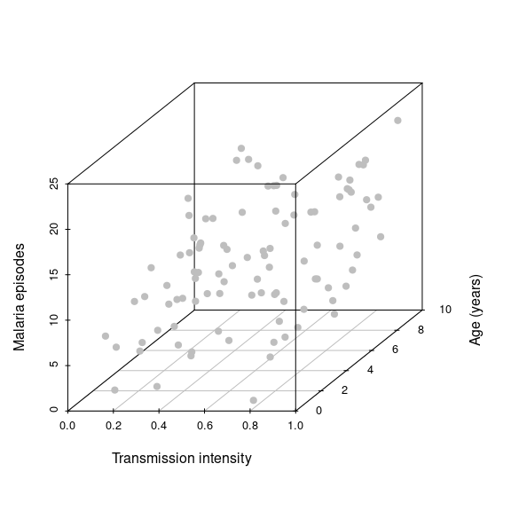 Note how we now spread our data along a third dimension, i.e. we go from 2D to 3D and from a best fit line to a best fit hyperplane. Adding more explanatory variables will effectively spread the data even further in more dimensions, which makes it much harder to make robust inferences. Another key objective in statistical modelling is therefore to find the minimal adequate model.
To fit the model in R we use exactly the same function and terminology as before
which we can project onto our 3D-scatterplot
hfig <- scatterplot3d(EIR, age, episodes, pch=19, ylab='Age (years)',
xlab='Transmission intensity', zlab='Malaria episodes', color='grey')
hfig$plane3d(fit, draw_polygon=T)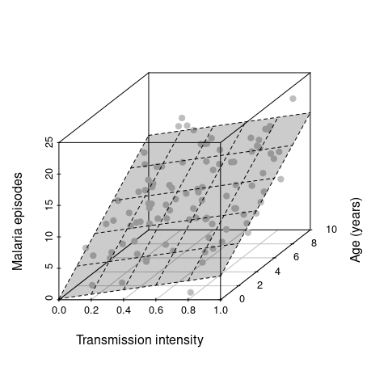
Next we are interested in the actual inference, i.e. the estimated parameters and some indication whether the two predictor variables (age and EIR) have a significant effect on the response (malaria episodes)
##
## Call:
## lm(formula = Episodes ~ EIR + Age, data = epiData)
##
## Residuals:
## Min 1Q Median 3Q Max
## -5.2073 -1.4295 -0.2354 1.2642 5.4162
##
## Coefficients:
## Estimate Std. Error t value Pr(>|t|)
## (Intercept) 0.15704 0.63964 0.246 0.807
## EIR 3.59941 0.71582 5.028 2.27e-06 ***
## Age 1.48781 0.08412 17.686 < 2e-16 ***
## ---
## Signif. codes: 0 '***' 0.001 '**' 0.01 '*' 0.05 '.' 0.1 ' ' 1
##
## Residual standard error: 2.053 on 97 degrees of freedom
## Multiple R-squared: 0.7746, Adjusted R-squared: 0.77
## F-statistic: 166.7 on 2 and 97 DF, p-value: < 2.2e-16As before, using the summary() function we get a summary of everything that’s important.
- the residuals appear symmetric and centered around 0
- the estimates for \(\beta_1\) (EIR) and \(\beta_2\) (age) are both positive and in magnitude as expected
- the estimate for \(\beta_0\) is \(\neq 0\) - what does this mean in practical terms? (we will revisit this at a later part of this workshop)
- the inferred effects of both EIR and age are statistically significant
- the adjusted R-squared value suggests that \(\sim 80\)% of the variation is explained by our model
This all seems really good, but we should still have a look at model diagnostics to see whether our model, or rather its underlying assumptions are valid.
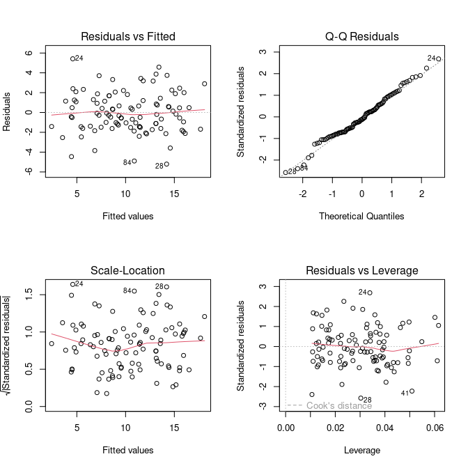
The diagnostics all look reasonable and there is nothing that should make us doubt our model and assumed relationship between the response and explanatory variables. Note, these plots look exactly the same as in the simple linear model we have done earlier. This is because no matter how many (linear) predictors we put into our model, it is the behaviour of the residuals that we are interested in to make a statement about our model fit.
Calculate the predicted number of episodes plus 95% cofidence intervals for a 5 year old living in a transmission setting with EIR=0.5
Fit a new model
Episodes ~ Age. Look at the total variation explained and compare this to the full model; what would you conclude from this?Fit a new model
Episodes ~ EIR. Look at the estimate for the predictor variable and its associated P value and compare this to the ones based on the full model; what would you conclude from this?
4.6 Categorical explanatory variables
So far we have only dealt with numerical predictor variables. But what about non-numerical or categorical variables? Turns out that these are as easily dealt with as numerical one. To show how to perform linear regression with one or more categorical explanatory variables, we slightly modify our malaria episode dataset to include one extra variable: bednet, which will be an indicator of whether the child sleeps under a bednet or not.
# create random data points for age and EIR
bednet <- sample(c('yes', 'no'), 100, replace=TRUE)
# assume some linear relationship between episodes and age and EIR plus noise
episodes <- ifelse(bednet=='yes', 0, 2) + 1.5*age + 4.1*EIR + rnorm(100, 0, 2)
# put into new data.frame
epiData <- data.frame(Episodes = episodes,
Age = age,
EIR = EIR,
Bednet = factor(bednet))The model we are fitting now looks very similar to the one we fitted before
However, bednet is now a dummy variable that takes on a value of 0 (bednet = “no”) or 1 (bednet = “yes”). So essentially we are fitting two regression lines, one for those who sleep under a bednet and one for those who do not (because the \(\beta_3\) term will fall out).
In terms of fitting this model in R, nothing has changed and we do not need to explicitly specify if one or more of the variables is a categorical one, the lm() function will take care of this for us
##
## Call:
## lm(formula = Episodes ~ EIR + Age + Bednet, data = epiData)
##
## Residuals:
## Min 1Q Median 3Q Max
## -3.379 -1.280 0.090 1.038 5.435
##
## Coefficients:
## Estimate Std. Error t value Pr(>|t|)
## (Intercept) 2.03776 0.57523 3.543 0.000614 ***
## EIR 4.68344 0.63706 7.352 6.52e-11 ***
## Age 1.54715 0.07706 20.076 < 2e-16 ***
## Bednetyes -3.26666 0.37840 -8.633 1.28e-13 ***
## ---
## Signif. codes: 0 '***' 0.001 '**' 0.01 '*' 0.05 '.' 0.1 ' ' 1
##
## Residual standard error: 1.825 on 96 degrees of freedom
## Multiple R-squared: 0.8272, Adjusted R-squared: 0.8218
## F-statistic: 153.1 on 3 and 96 DF, p-value: < 2.2e-16As you will notice from the summary, we now get an estimate for Bednetyes but not for Bednetno, what is going on? Becauase Bednet can only take on two values (0/1 or no/yes), one is taken as the reference case. That is, the intercept can now be interpreted as the average number of episodes for 0-year old living in a setting with an EIR=0. The estimate Bednetyes=-3.2667 tells you how much lower the expected number of episodes is for those who do sleep under a bednet.
predict() function, what is the predicted number of episodes for a 7-year old who sleeps under a bednet in a setting with an EIR of 0.8?
To show the effect of the extra categorical variable, we can plot the data once by ignoring the effect of Bednet and once by colouring in the data points by bednet use.
# very useful package for arranging multiple ggplots
library(patchwork)
# simply plot all data and ignore the effect of bednet use
# the lm function in this case would fit the model episodes ~ age + EIR
p1 <- ggplot(epiData, aes(x = Age, y = Episodes)) +
geom_point() +
geom_smooth(method='lm', se=F)
# create new dataset for predict()
newdata <- expand_grid(
Age = seq(1, 10, length.out = 10),
EIR = rep(median(epiData$EIR), 10),
Bednet = factor(c("no", "yes")))
newdata <- newdata %>%
mutate(Episodes = predict(fitCat, newdata))
p2 <- ggplot(mapping = aes(x = Age, y = Episodes, col = Bednet)) +
geom_point(data = epiData) +
geom_line(data = newdata, linewidth=1)
p1 + p2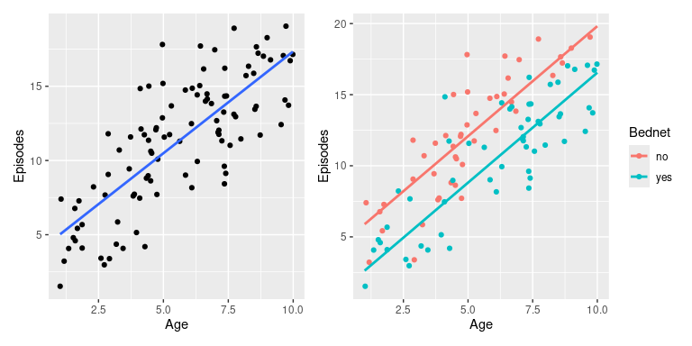
ggplot to plot Episodes against Age stratified (coloured) by Bednet and add regression lines using geom_smooth(method = 'lm'). What do you notice?
4.7 Interactions
Before we go on to the next big topics, Mixed Effect Models and Generalised Linear Models, we briefly show you how to consider possible interactions between two or more variables. That is, we have so far considered that the different predictors (e.g. age and EIR) had an independent effect on the response variable (e.g. episodes). There are situations where this is not the case and where the effect of one explanatory variable on the response depends on the value of another explanatory variable. We can estimate this dependency by including a so-called interaction term in our model.
To illustrate the importance of interactions and how to deal with them in our regression model, we will look at an example where our inferences can be very misleading when not accounting for possible interaction effects.
Let’s consider another made up example, in this case a disease, which we believe is influenced by temperature and rainfall. Furthermore, let’s assume rainfall is seasonal but temperature is not, such that rainfall can be represented as a categorical variable; the response variable will be disease incidence.
# create temperature and rinafall data
temperature <- runif(100, 28, 34)
rainfall <- sample(c('no', 'yes'), 100, replace = TRUE)
# define incidence as dependent on temperature, more so in rainy season
incidence <- ifelse(rainfall == 'yes',
101 + 2.7*temperature + rnorm(100, 0, 3),
184 + 0.0*temperature + rnorm(100, 0, 3))
# put everything into data.frame
incDF <- data.frame(incidence = incidence,
temperature = temperature,
rainfall = factor(rainfall))Note, in this example we have created data, where temperature appears to have an effect but rainfall does not.
If we were given this data we would usually start by visualising it, maybe with a boxplot showing the distribution of incidence for the off and on-season and a graph plotting incidence against temperature.
p1 <- ggplot(incDF, aes(x = rainfall, y = incidence, fill = rainfall)) +
geom_boxplot(alpha = 0.5)
p2 <- ggplot(incDF, aes(x = temperature, y = incidence)) +
geom_point() +
geom_smooth(method='lm')
p1 + p2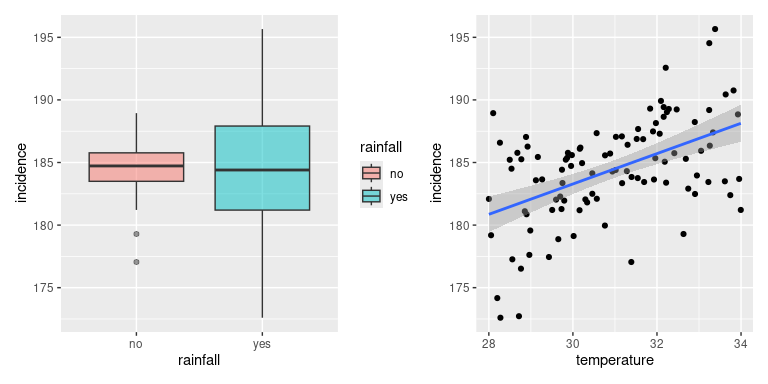
It would be reasonable to conclude that rainfall does not seem to have a strong effect on incidence whilst there seems to be a clear and positive correlation between temperature and incidence. Next we would put this through our statistical modelling machinery and test whether our predictions are right.
##
## Call:
## lm(formula = incidence ~ temperature + rainfall, data = incDF)
##
## Residuals:
## Min 1Q Median 3Q Max
## -8.8694 -1.7518 0.1403 2.6131 8.4056
##
## Coefficients:
## Estimate Std. Error t value Pr(>|t|)
## (Intercept) 147.0397 6.6019 22.272 < 2e-16 ***
## temperature 1.2146 0.2130 5.702 1.28e-07 ***
## rainfallyes -0.3287 0.7309 -0.450 0.654
## ---
## Signif. codes: 0 '***' 0.001 '**' 0.01 '*' 0.05 '.' 0.1 ' ' 1
##
## Residual standard error: 3.594 on 97 degrees of freedom
## Multiple R-squared: 0.2517, Adjusted R-squared: 0.2363
## F-statistic: 16.31 on 2 and 97 DF, p-value: 7.814e-07From this analysis we would conclude that temperature has a statistically significant effect on disease incidence (P<0.001), that rainfall does not have a statistically significant effect on disease incidence (P=0.91), and that would be the end of it. But what about the possibility that the effect of temperature is dependent on whether it is the on- or the off-season? That is, we are interested in the interaction term temperature \(\times\) rainfall. In the lm() function we can do this either adding the term temperature:rainfall to our previous model, or use the notation temperature*rainfall, which is short for temperature + rainfall + temperature:rainfall
##
## Call:
## lm(formula = incidence ~ temperature * rainfall, data = incDF)
##
## Residuals:
## Min 1Q Median 3Q Max
## -8.3512 -1.1099 0.1151 1.5418 5.6447
##
## Coefficients:
## Estimate Std. Error t value Pr(>|t|)
## (Intercept) 198.1774 6.9041 28.704 <2e-16 ***
## temperature -0.4415 0.2232 -1.978 0.0508 .
## rainfallyes -93.4598 9.3205 -10.027 <2e-16 ***
## temperature:rainfallyes 3.0131 0.3011 10.007 <2e-16 ***
## ---
## Signif. codes: 0 '***' 0.001 '**' 0.01 '*' 0.05 '.' 0.1 ' ' 1
##
## Residual standard error: 2.528 on 96 degrees of freedom
## Multiple R-squared: 0.6338, Adjusted R-squared: 0.6223
## F-statistic: 55.37 on 3 and 96 DF, p-value: < 2.2e-16In the summary we can see one additional term: temperature:rainfallyes, and we see that this is highly significant (P<0.001). On the other hand, temperature does not appear to be a statistically significant predictor of incidence anymore! Beware: this would be the wrong conclusion because of the significance of the interaction term. I.e. removing temperature from our model, which would also remove the interaction term, would result in a much inferior model.
One other, and important, conclusion we can draw from this analysis is that interaction terms affect the slope of the regression line, which contrasts the additive effects we saw earlier and that only affected the intersect. And this also explains why adding linear regression lines with geom_smooth for stratified data we can get lines with different gradients.
ggplot(incDF, aes(x = temperature, y = incidence, col = rainfall)) +
geom_point() +
geom_smooth(method = 'lm')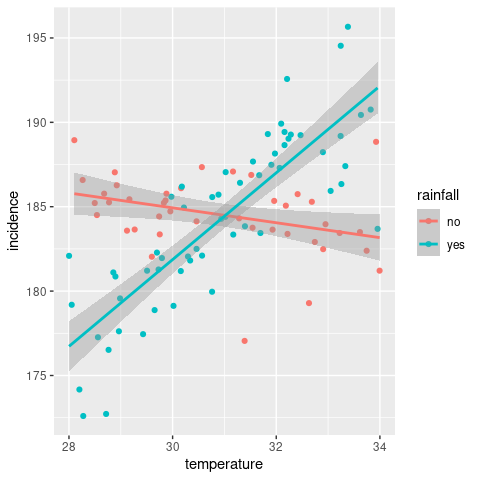
Note: in this example we considered interaction between a continuous and a categorical variable. Interactions between two continuous or two categorical variables are also possible and are treated in exactly the same way in
lm(). The only difference is the (biological) interpretation of the interaction term.